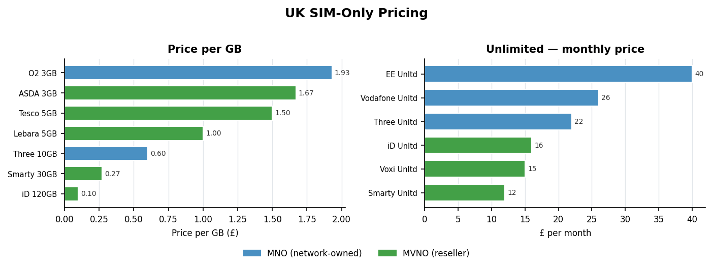
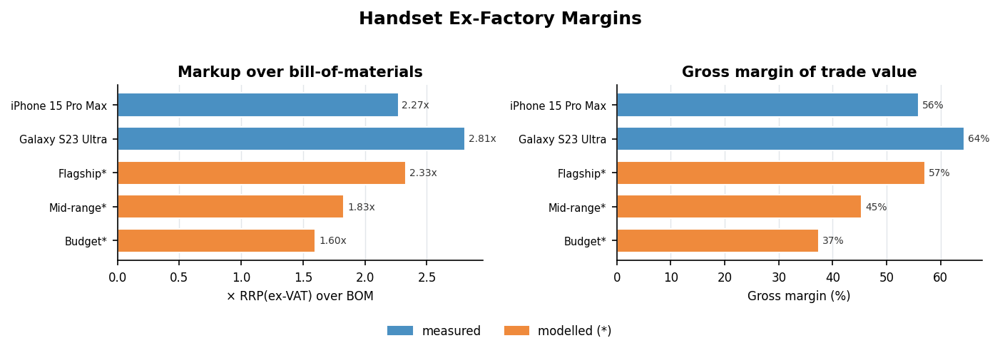
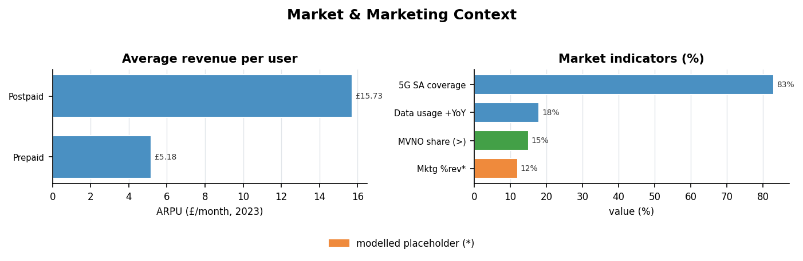

AI2ORBIT — UK Mobile Data Market Report
Pricing · Handset Ex-Factory Margins · Marketing & Market Context | 2026-08-01
SIM-Only Tariffs — UK Market
Headline list prices, mid-2026. Every figure measured. ∞ = unlimited; £/GB blank where unlimited.
| Operator | Type | Runs on | Plan | Data
(GB) | Price
(£/mo) | Per GB
(£) | Contract
(months) | Roam
EU |
|---|
| Three | MNO | Three | Unlimited SIM | ∞ | 22.00 | — | 24 | yes |
| Three | MNO | Three | 10GB SIM | 10 | 6.00 | 0.60 | 1 | yes |
| EE | MNO | EE | Unlimited SIM | ∞ | 40.00 | — | 24 | yes |
| O2 | MNO | O2 | Entry SIM | 3 | 5.80 | 1.93 | 1 | yes |
| Vodafone | MNO | Vodafone | Unlimited SIM | ∞ | 26.00 | — | 24 | yes |
| Smarty | MVNO | Three | 3GB rolling | 3 | 3.90 | 1.30 | 1 | yes |
| Smarty | MVNO | Three | ~30GB rolling | 30 | 8.00 | 0.27 | 1 | yes |
| Smarty | MVNO | Three | Unlimited | ∞ | 12.00 | — | 12 | yes |
| iD Mobile | MVNO | Three | 120GB | 120 | 12.00 | 0.10 | 1 | yes |
| iD Mobile | MVNO | Three | Unlimited | ∞ | 16.00 | — | 1 | yes |
| Lebara | MVNO | Vodafone | 5GB | 5 | 5.00 | 1.00 | 1 | yes |
| Voxi | MVNO | Vodafone | Unlimited | ∞ | 15.00 | — | 1 | yes |
| Tesco Mobile | MVNO | O2 | 5GB | 5 | 7.50 | 1.50 | 12 | yes |
| ASDA Mobile | MVNO | Vodafone | 3GB | 3 | 5.00 | 1.67 | 1 | yes |
Read: the cheapest effective data on the market is an MVNO large bundle (iD Mobile 120GB ≈ £0.10/GB); network-owned own-brand plans carry a 3–15× per-GB premium for brand, support and roaming certainty.
UK SIM-Only Pricing — Charts
Left: price per GB across finite-allowance plans. Right: monthly price of the unlimited tariffs. Colour = network-owned (MNO) vs reseller (MVNO).

Networks & the MVNOs on Them
Four physical networks carry every UK SIM; most value brands ride on them.
| Host network | Own unlimited
(£/mo) | Value brands hosted | Cheapest £/GB
on this network |
|---|
| Three | 22.00 | Smarty, iD Mobile | 0.10 |
| EE | 40.00 | (EE own-brand only shown) | — |
| Vodafone | 26.00 | Voxi, Lebara, ASDA Mobile | 1.00 |
| O2 (VMO2) | — | Giffgaff, Tesco Mobile, Sky Mobile | 1.50 |
Sky Mobile + Tesco Mobile alone hold >15% of the consumer segment; VMO2 closed 2024 with 45.7M total connections.
Handset Ex-Factory Margins
Cost → ex-factory → RRP waterfall
BOM (bill-of-materials) measured from teardown estimates; ex-factory modelled at BOM × 1.30 (assembly, test, maker's margin); RRP shown ex-VAT as the trade value. FX £0.79/USD, VAT 20%.
| Model | BOM
(£) | Ex-factory*
(£) | RRP ex-VAT
(£) | Gross
margin | Markup
×BOM | Basis |
|---|
| iPhone 15 Pro Max | 440.82 | 573.07 | 999.17 | 55.9% | 2.27× | measured |
| Galaxy S23 Ultra | 370.51 | 481.66 | 1040.83 | 64.4% | 2.81× | measured |
| Flagship (generic) | 410.80 | 534.04 | 958.33 | 57.1% | 2.33× | modelled |
| Mid-range (generic) | 181.70 | 236.21 | 332.50 | 45.4% | 1.83× | modelled |
| Budget (generic) | 82.95 | 107.84 | 132.50 | 37.4% | 1.60× | modelled |
*Ex-factory is modelled, not a quoted number. Real ex-factory prices are confidential. BOM excludes assembly, software, IP/royalties, logistics, warranty and marketing — so the gross margin above is the pool those are paid from, not net profit. One constant (EXFACTORY_MULT) re-prices the whole column.
2.3–2.8×flagship RRP (ex-VAT) over BOM
56–64%flagship gross margin of trade value
1.6×budget-tier markup — margin thins downmarket
Handset Margins — Charts
Left: how many times RRP (ex-VAT) sits above bill-of-materials. Right: gross margin of the ex-VAT trade value. Colour = measured vs modelled tier.

- Flagships mark up roughly 2.3–2.8× their raw component cost.
- The multiple compresses toward the budget tiers (~1.6×).
- Measured rows are teardown-based; the three generic tiers are modelled and flagged.
- BOM is the measured anchor — everything downstream is a stated model you can retune.
Market & Marketing Context
Where the money and growth sit. The two marketing rows are modelled placeholders — replace with your own figures and they flow through unchanged.
| Metric | Value | Unit | Period | Segment | Basis | Source |
|---|
| Postpaid ARPU | 15.73 | GBP/month | 2023 | postpaid | measured | Ofcom/Statista |
| Prepaid ARPU | 5.18 | GBP/month | 2023 | prepaid | measured | Ofcom/Statista |
| VMO2 total connections | 45.7 | million | 2024 | all | measured | Virgin Media O2 |
| 5G SA population coverage | 83 | % | 2025 | all | measured | Ofcom CN 2025 |
| Mobile data usage growth | 18 | % YoY | 2025 | all | measured | Ofcom |
| MVNO consumer share (Sky+Tesco) | >15 | % | 2025 | MVNO | measured | market reports |
| Marketing spend of revenue | 12 | % (est) | 2026 | all | modelled | placeholder |
| Cost per acquisition (SIM) | 18 | GBP (est) | 2026 | all | modelled | placeholder |

The Report-Engine Sample Feed
Everything in this report is driven by one deterministic generator so the numbers are reproducible and easy to widen (JSON checksum a792719cdd4e03a6).
| File | What it is |
|---|
| plans.csv | 14 SIM-only tariffs with price-per-GB |
| handsets.csv | 5 handset cost→ex-factory→RRP waterfalls |
| market.csv | 8 market / marketing metrics |
| uk_data_market_sample.json | all three tables + meta & assumptions |
| gen_sample.py | regenerates the CSVs + JSON; --check verifies invariants |
| gen_charts.py | builds the three charts in this report |
| data_dictionary.md | column-by-column schema + modelling assumptions |
Honesty labels
- measured — a public / reported figure (see the source column).
- modelled — computed here from a stated assumption; not a quoted number. The ex-factory column and the two marketing rows are modelled and flagged.
To make v2 exact
- Your report engine's expected schema / column names — I'll match it precisely.
- Your own marketing figures (spend %, CPA, ROI) — they drop straight in.
Sources & Method
Measured = reported figure. Modelled = computed from a stated assumption, clearly flagged.
- SIM-only pricing — UK operator price lists & comparison sites, mid-2026 (measured).
- Handset BOM — TechInsights / IHS-style teardown estimates (measured); ex-factory modelled at BOM × 1.30.
- ARPU — Ofcom / Statista, 2023 (measured).
- 5G coverage & data growth — Ofcom Connected Nations 2025 (measured).
- MVNO share & VMO2 connections — market reports / Virgin Media O2, 2024–25 (measured).
- Marketing spend & CPA — modelled placeholders, awaiting client figures.
Modelling constants (all editable in gen_sample.py): FX £0.79 / USD · ex-factory ×1.30 · VAT 20%. Change one and the whole dataset re-prices. This is a sample report — say the word and I'll widen the plan set, add handsets, or swap in your own marketing numbers, at whatever page length you want.